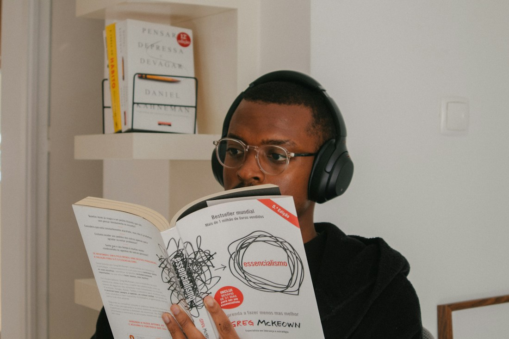

Song
Original educational lyrics turn the key concept into a verse and chorus.
LISTEN & REPEATMUSIC × LEARNING × TECHNOLOGY
Meet Syllabeat—an Android learning experience that turns academic concepts into songs, then turns listening into practice.
A five-member NMIMS student project
Presented by Dhvani Tandel · MBATech CE
OPEN THE ONLINE PRESENTATION
dhvicore.github.io/designexp/dhvani

A different way to revise.01 / THE IDEA
Formulas and definitions can be difficult to revisit. Our idea combines a memorable song with an activity that checks understanding.
Original educational lyrics turn the key concept into a verse and chorus.
LISTEN & REPEATBlanks, multiple-choice questions and line ordering make the student participate.
RECALL & CHECKOne Android app connects topic selection, lyrics, audio and feedback.
ONE LEARNING JOURNEYOUR HYPOTHESIS Music can make revision more engaging. Whether it improves long-term retention still needs a student study.
SEMESTER / JUNE–NOVEMBER 2026
Research and documentation became a curriculum dataset, then a working Android learning app.
Investigated music-based learning, AI tools and the supporting research files.
Documented Calculus topics, formulas, applications and music categories.
Linked topics to song references and investigated lyric-generation tools.
Continued research and prepared the project’s content and documentation files.
Developed the prototype and Android app, audio playback and activities.
Refined Syllabeat, added Economics and updated the report and presentation.
LOGBOOK REFERENCE 20 Jul · 29 Jul · 11 Aug · 18 Aug. June and September summaries follow Dhvani’s account; no extra meeting dates are inferred.
SEMESTER / RESEARCH & DATA
June research and file preparation supported the detailed dataset work recorded in July.
Three linked artifacts: syllabus specification, song/topic mapping and per-topic generation briefs.
Sources: supplied report §2 and §3; Calculus_Dataset_Findings.md; June research confirmed by Dhvani.
SEMESTER / CONTENT & AI RESEARCH
Topic mapping established the link between academic content, language and musical style.
Next task recorded: prepare Unit 1 lyrics grounded in the syllabus and make sample songs.
Continued research and preparation of the project files, including lyric material, findings, tool guidance and documentation.
Core rule: keep the theorem’s assumptions and formula intact when adapting words to music.
Source: Logbook_Week7_Entry.md, including prior meeting dates; September summary confirmed by Dhvani. File completion dates are not assigned individually.
RESEARCH / WHY THIS APPROACH
The original literature review informed the SAT idea. It does not prove that our app improves marks or long-term retention.
Use a chorus for recall, then ask students to retrieve facts through blanks, choices and sequencing.
Active-learning literature informs the approach; the app still needs evaluation.Start from the syllabus explanation, exact formula and required conditions. Review translations and singing pronunciation.
Fluent lyrics can still contain academic errors.Suno supplied the final saved recordings. Colab / ACE-Step was experimental. MusicGen and MagicSchool were researched.
No custom singing model was successfully trained for the final demo.WHAT WE WILL MEASURE Compare song + activity with conventional revision, using topic quizzes immediately and again after a delay.
PROTOTYPE / PYTHON & STREAMLIT
Calculus Song Studio explored the full SAT experience and revealed the limitations of synthetic singing.
Robotic voices and weak word clarity led to saved Suno recordings for the Calculus demo.
Colab/ACE-Step provided another experimental route, but exact tune control and service reliability remained unresolved.
Whisper sing-back and the Biology demo remain prototype explorations, not shipped Android features.
References: original report §4, prototype/README.md and the current Android implementation. No custom singing model was trained for the final demo.
02 / CURRICULUM FIRST
The work began with syllabus collection, unit-wise topic segregation, key terms and song-reference mapping—not audio alone.
Differential calculus, partial differentiation, integrals, multiple integrals and vector calculus.
Atomic structure, gas laws, water, materials, electrochemistry, acids and bases.
THE SHARED DATA CONTRACT
Stable topic IDs keep songs, lyric versions and quiz content connected. Bundled JSON makes the demo available offline.
ECONOMICS / MANAGEMENT 32 topics · 7 units · English, Hindi and Marathi · added November
03 / THE PRODUCT
Sign up or log in, then follow a guided learning flow.
Select subject, unit and topic; review the concept.
Calculus: Hindi, English, bhajan or lo-fi. Chemistry and Economics: English, Hindi or Marathi.
Prepare a curriculum-based draft or load the saved recording’s lyrics.
Play offline, pause, seek, replay and read highlighted lines.
Answer three activity types, get a score and try again.
Continuous on [a,b].
Differentiable inside.
Equal endpoint values.
Equal ends
Three conditions hold
Some c lies in between
04 / PRESS PLAY
Try the saved Rolle’s Theorem recordings. Each category has its own audio file and line timings.
Original educational lyrics
Saved Suno-generated recordings
No generation server needed for these saved songs.
Press play to hear the selected recording.
Automatic line timing is approximate. Song names in the app are references; exact matching to a commercial melody is not verified.
NOVEMBER / LATEST INTEGRATION
Krishhma Vira’s Economics/Management contribution adds 32 topics across seven units, with English, Hindi and Marathi content.
Introduction, markets/macroeconomics, central banking, production, management, organising and controlling.
Each topic connects its explanation and key terms to language-specific song suggestions, editable lyrics and practice.
Twelve topics include supplied English lyrics. Other drafts use templates based on the contributed content.
No Suno or Colab service is required for this route. Voice quality depends on Android’s installed voices.
STYLE REFERENCES Named songs guide style and tempo. This engine composes an original melody, rather than reproducing the selected commercial recording.
PRACTICE / THE A IN SAT
Step 5 turns the listening session into three scored tasks. Students receive feedback and can retry.
The function must be continuous on the closed interval [a,b].
It must be differentiable inside, and f(a) = f(b).
Recall important words from the lesson instead of only recognising them.
Pick the correct formula or relevant key terms for the selected subject.
Rebuild the lesson, check the feedback and retry for a better score.
CURRENT SCOPE Activities run offline and are currently in English. Sing-back assessment and scheduled revision remain future Android features.
05 / UNDER THE HOOD
Built in Android Studio with Kotlin and Jetpack Compose; tested on an Android emulator.
Login · topic selection · music choices · lyrics · player · activities
Bundled JSON records
Stable topic IDs
Multilingual content
Device-local SQLite
Salted PBKDF2 hashes
Remembered email
Original MP3 assets
Buffered Media3 playback
Per-recording line cues
Content-based blanks
Formula / keyword quiz
Line order + feedback
Reviewed syllabus lyrics → Suno → downloaded MP3 → local Whisper timing → Android assets
No transcription or model inference runs during saved-song playback.
ECONOMICS ROUTE: topic + lyrics → Android TTS → pitch/beat renderer → WAV + line cues → Media3. Installed voices are preferred; a network voice may require internet.
TECHNICAL / SHORT CODE WALKTHROUGH
The app separates the screens, curriculum, accounts, song creation and playback so they can develop independently.
SongStudio.ktControls the five learning steps and remembers the selected subject, topic, category and lyrics.
Curriculum.kt + JSON assetsLoads syllabus records and stable topic IDs. Chemistry and Economics adapters map team data into one common structure.
AccountStore.ktStores device-local accounts with salted password hashes. Remembers the email while requiring the password again.
EconomicsAudio.ktRecords TTS lines, runs the imported pitch/beat renderer and saves a WAV with lyric cues.
LocalSongEngine.kt + TimedLyrics.ktUses Media3 to play local audio. The playback clock chooses which lyric line to highlight.
LearningActivity.ktCreates blanks, formula/key-term choices and ordering tasks, then checks answers and offers a retry.
06 / WHAT WE BUILT & LEARNED
The original report and deck documented the Calculus prototype. The current implementation adds a complete Android learning journey.
Collected syllabus topics, formulas, key terms and music references. Developed the Song–Activity–Technology framework.
Explored text-to-speech, pitch shaping, melodies and quizzes. Robotic vocals exposed the gap between speech and natural singing.
Tested a GPU/Colab music workflow. Singing quality, service connectivity and exact melody control remained challenging.
Integrated saved songs, Chemistry, lyric cues and quizzes in October. Added Economics and on-device generation in November.
Buffered playback and in-place updates preserve the demo and local accounts.
Build/lint, topic mappings, audio continuity, seeking and lyric timing checks.
Calculus/Chemistry use saved recordings. Economics generates TTS-based songs on the device; natural singing quality remains an open issue.
VALIDATION / WHAT WORKS TODAY
We checked the implementation, while keeping technical playback separate from musical quality and learning effectiveness.
PLAYBACK TROUBLESHOOTING We increased buffering and switched the Mac emulator from software to hardware graphics. Emulator performance still depends on the host device.
FUTURE / THE NEXT CHAPTER
Proposed next steps build on the same curriculum → lyrics → audio → activity structure.
Add Physics, Biology and further syllabus data. Economics is now integrated. Introduce verified branch → year → semester mappings.
Add song history, cloud sync, teacher content review, more languages and spaced-repetition reminders.
Connect a supported singing API, explore licensed melody conditioning and sing-back feedback, then test recall with students.
PLANNED, NOT YET SHIPPED SAP/college portal login needs institutional access. Exact commercial-song melody control needs suitable rights, references and further validation.
SYLLABEAT / THE NEXT WAY TO REVISE
A working Android prototype bringing curriculum, educational music, read-along lyrics and active practice into one experience.
NMIMS MPSTME · Design Experience
Faculty mentors: Dr. Jaychand Upadhyay & Dr. Dhirendra Mishra